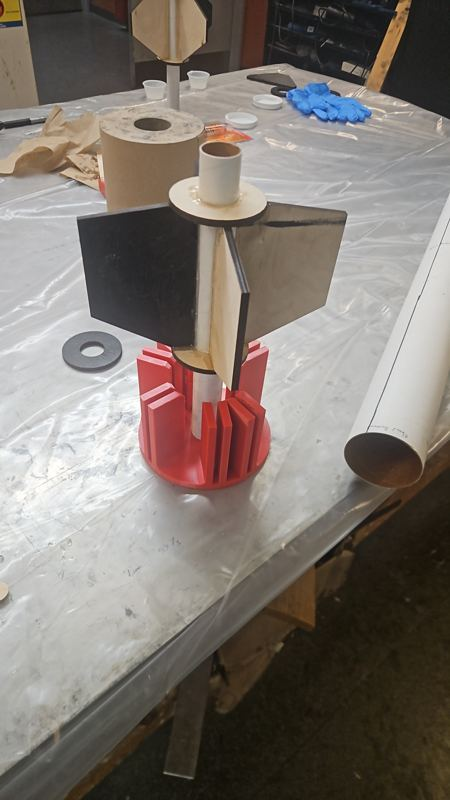
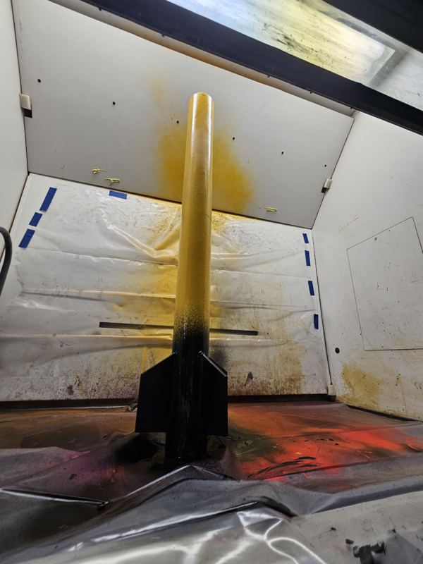

Flown
Personal certification build
October 2026
Averell 1, L1 high-power rocket
I designed, built and flew a Level 1 certification rocket. It reached 2,100 ft on an H135 motor on 18 October 2026 and came back intact.
The build, from the parts table to the recovery field

Parts Everything laid out before assembly: body tube, 3D-printed nosecone, fins and bulkhead. 
Fin can Fins and motor tube assembled on the 3D-printed fin can and centering ring. 
Assembled The airframe together and standing in the workshop, before paint. 
Painted Yellow and black, in the spray booth. 
Launch Leaving the pad on an H135 motor, 18 October 2026. 
Recovered Found in the grass with the parachute attached. Intact.


Design and certification
- Simulated the flight in OpenRocket and tuned stability for a windy launch day.
- Designed the fins, bulkhead and motor retainer in SolidWorks and the nosecone in Onshape, then 3D-printed the parts and assembled the airframe with epoxy.
- Earned Level 1 High-Power Rocketry certification after passing the Transport Canada and Canadian Association of Rocketry (CAR) exams. Member of CAR and CQF.
OpenRocket, SolidWorks, Onshape, 3D printing, epoxy assembly
 Lectern
Lectern